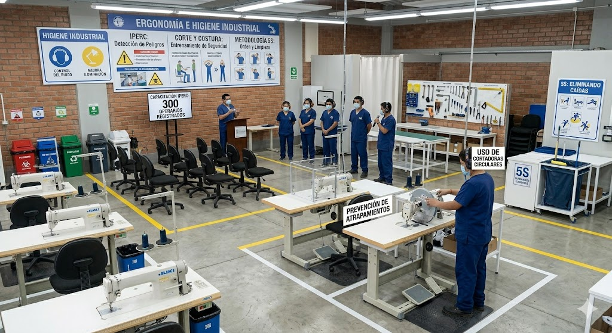
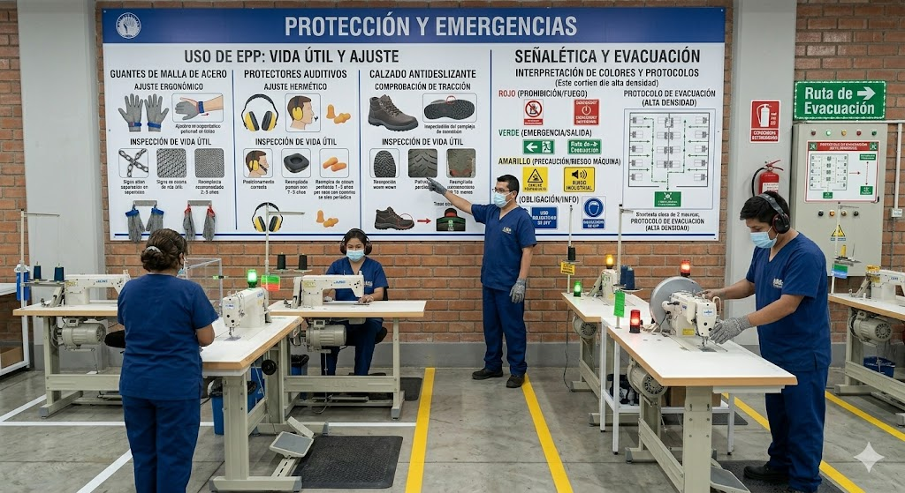
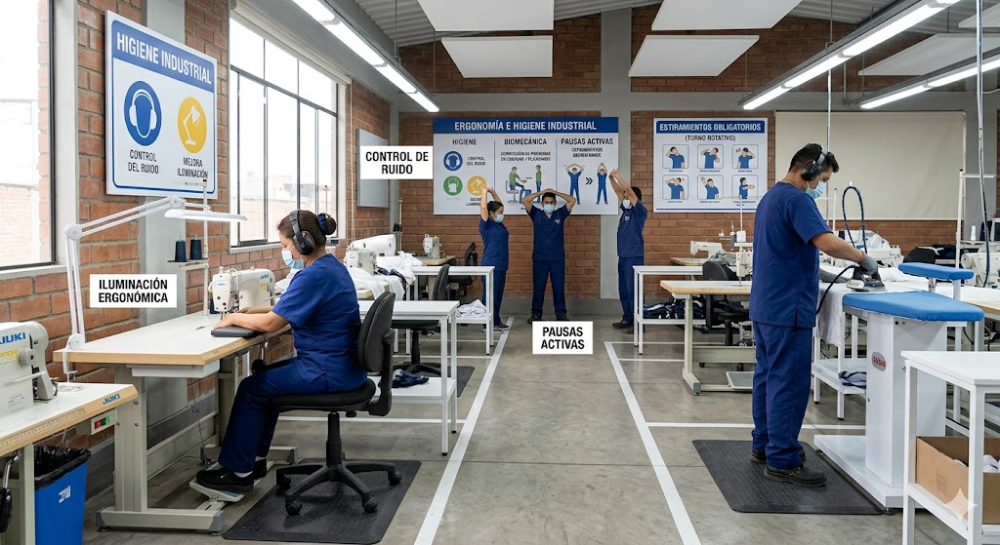
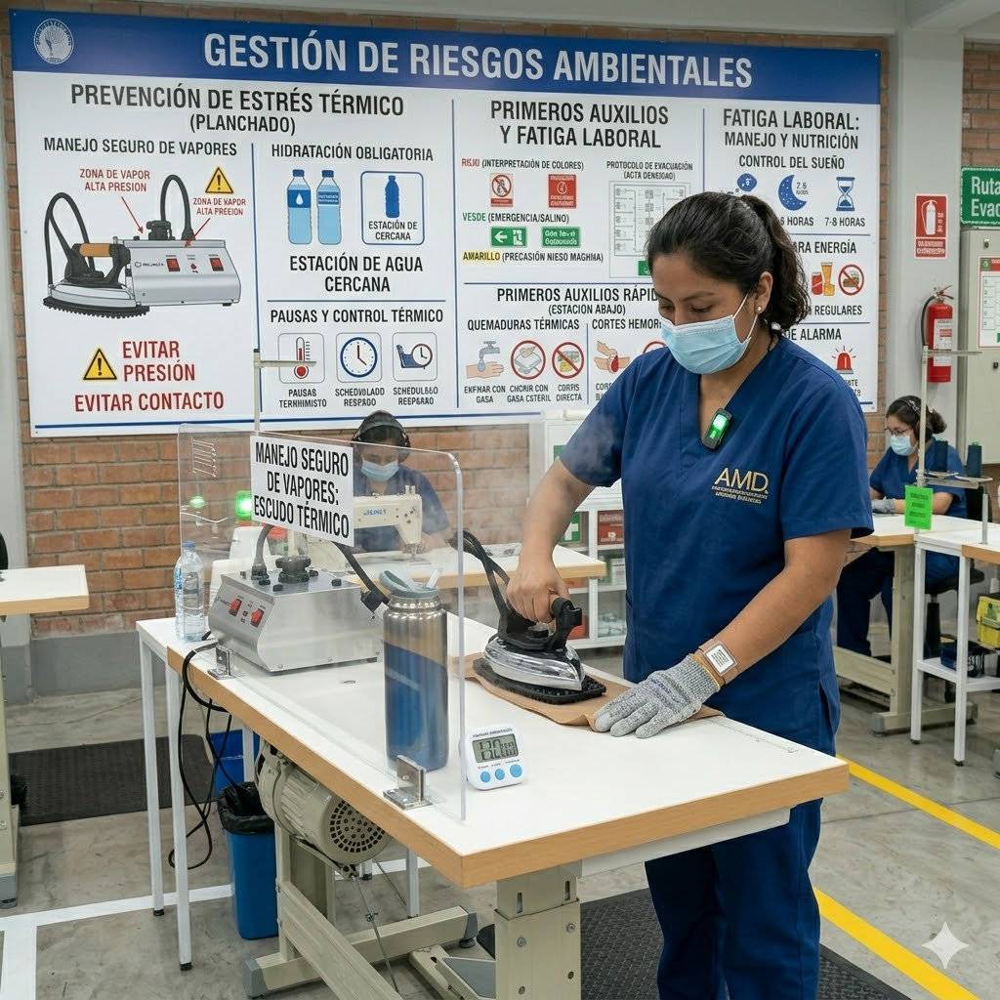

PROGRAMA INTEGRAL DE CAPACITACIÓN SST
Estrategia de Seguridad Textil SAC • Ley N.º 29783
1. Seguridad Industrial

Operatividad y Riesgos Mecánicos
- IPERC: Capacitación para 300 operarios en detección de peligros antes de la jornada de 10h.
- Corte y Costura: Entrenamiento en uso de cortadoras circulares y prevención de atrapamientos con agujas.
- Metodología 5S: Orden y limpieza para eliminar caídas recurrentes en logística y producción.

Protección y Emergencias
- Uso de EPP: Ajuste y vida útil de guantes de malla de acero, protectores auditivos y calzado antideslizante.
- Señalética: Interpretación de colores y protocolos de evacuación ante alta densidad de máquinas.
2. Salud Ocupacional

Ergonomía e Higiene Industrial
- Higiene: Control del ruido industrial prolongado y mejora de iluminación para reducir fatiga visual.
- Biomecánica: Corrección de posturas en costura y planchado para evitar trastornos musculoesqueléticos.
- Pausas Activas: Estiramientos obligatorios durante los turnos rotativos extensos.

Gestión de Riesgos Ambientales
- Planchado: Prevención de estrés térmico, hidratación y manejo seguro de vapores a alta presión.
- Primeros Auxilios: Atención inmediata de quemaduras térmicas y cortes hemorrágicos.
- Fatiga Laboral: Manejo del sueño y nutrición para evitar errores por agotamiento.
Estrategia de Fortalecimiento Cultural
Liderazgo Visible
Supervisores capacitados para ser el primer ejemplo normativo en planta.
Casi-Accidentes
Reporte preventivo sin sanciones para identificar fallas antes de que ocurran.
Evaluación Práctica
Pruebas en el puesto de trabajo para asegurar el cumplimiento de estándares.